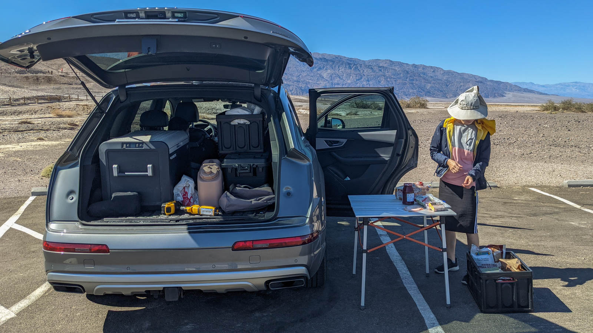
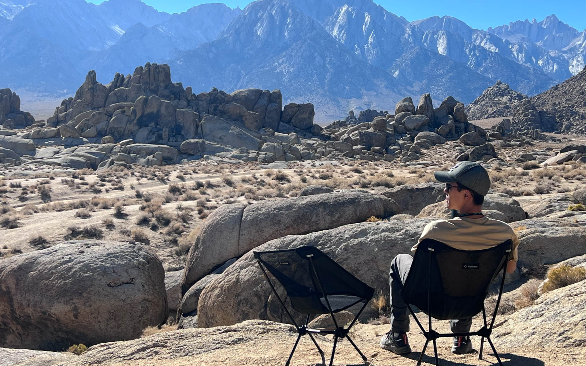

Camping
(Updated: 2021-10-24)
목차
- Kitchen system
- Portable Electric Fridge
- Coleman Triton Burner
- MSR Pocket Rocket Deluxe
- Jackery Explorer 500
- Sleep System
- Diesel Heater
- Enigma Quilt
- Big Agnes Pad
- NEMO Tensor Insulated
- Exped Megamat 10 Duo
- Marmot Limelight 2P Tent
- Lone Rider ADV Tent
- Gazelle T4 Tent
- Furniture
- REI Camping Table
- Helinox Chair One
- Mount River 2 Step Chair
캠핑용 장비를 전반적으로 업그레이드 하면서 각각 리뷰를 만들기 보다, 한 페이지에 같이 리뷰하는 게 낫겠다 싶어서 페이지로 정리해 보았습니다. 추가로 다른 품목도 업글 하게 되면 업데이트 하겠습니다.
Kitchen system
먼저 장비를 바꾸기 전에 쓰던 캠핑용 주방 시스템은 정말 여기저기서 긁어다 모은 물건들입니다. 뭐 새로 산 것도 마찬가지지만요. 냄비는 집에 있는 굴러다니는 이케아 냄비 가져다 썼구요. 프라이팬도 싸구려 코팅 다 벗겨져 가는 프라이팬으로 썼습니다. 버너는 Coleman Triron 프로판 개스 버너를 쓰고 있었고, 수저 젓가락등 식기류, 그릇은 일회용품으로 가지고 가서 쓰고 버리고 오는 식이었습니다.
아이스박스는 코스트코에서 저렴하게 파는 약 55리터의 아이스박스( 여기선 쿨러라 불러요)를 사용하고 있었습니다. 캠핑 가는 날, 근처 마트에 들러서 얼음 큰 한봉지 사서 채우고 음식물 상하지 않게 보관하고, 캠핑 내내 그 얼음으로 버티는 식이었죠.
Portable Electric Fridge

기존에 쓰던 코스트코 아이스박스는 저렴한 가격 치곤 보냉 성능은 나쁘지 않았습니다. 얼음 가득 채우면 열고 닫지 않으면 이틀은 충분히 얼음이 남아있더라구요. 그러나 얼음으로 보냉을 하는 방식은 불편한 점이 꽤 있어요.
얼음이 녹기 시작하면서 채소나 음식이 수분에 절여지는 게 마음에 들지 않더라구요. 그렇게 하지 않으려면 채소나 고기를 완전 밀봉해서 보관해야 하는 데, 쉽지가 않죠. 게다가 온도도 시간이 지날 수록 얼음이 녹으면서 올라가서 이틀이 되면서부터 우유같은 것이 좀 걱정이 되기 시작하구요.
다른 불편한 점은 얼음을 넣게 되면서 55리터 전체를 쓰지 못하고 얼음으로 거의 1/3을 쓰게 되는 게 좀 아쉬웠어요. 한 30~35리터 정도의 음식만 담을 수 있어서, 음료수도 많이 가져가지 못하겠더라구요. 더운 날 캠핑하면서 시원하게 음료수 마시는 즐거움은 첫째날밖에 느끼지 못하죠.
그래서 가장 먼저 업그레이드 한 것이 전기 냉장고 입니다. 진짜 큰 냉장고가 아니라 휴대용 12V 냉장고이구요. 냉장이나 냉동 둘 중 하나로 온도를 선택해서 유지시킬 수 있습니다.
ARB와 Dometic 중에 고민하다가 그나마 저렴한 Dometic으로 선택했습니다. 그래도 비싸긴 비싸죠. Dometic은 REI에서 구매할 수 있어서, 맘에 들지 않으면 리턴이 편리하다는 점과, REI 카드 + Membership dividened 고려하면 할인폭이 꽤 크다는 점때문에 선택했어요. 거의 상시 15% 할인을 하는 효과가 있죠.
일단 냉장고는 자동차용 12V 전기 또는 AC로 유지할 수 있습니다. 다만 냉장고에 배터리가 없어서 자동차의 12V socket이 상시전원이 아니라면 시동이 켜져있지 않을 땐 꺼지겠죠. 냉장고 자체에 저전압 보호 모드가 있고 상, 중, 하 로 보호 레벨을 선택할 수 있어서, 상시전원에 연결하는 것도 나쁘진 않은 선택인것 같네요. 그래도 보통의 자동차 배터리는 시동용 배터리라 충방전 횟수가 낮아서, 추천하진 않아요.
이 냉장고를 캠핑에서도 유지하려면 보조 배터리를 같이 사는게 답입니다. Dometic에서 보조배터리를 파는 데, 40Ah 짜리 배터리를 850 달러에 팔고 있는 사기극을 펼치고 있어서, 전 Dometic PLB40은 사지 않았고 Jackery 500Wh + 태양광 패널로 구입했습니다.
500Wh 배터리면 냉장고 하나로 이틀은 충분히 버티고, 태양광 발전으로 계속 충전한다고 하면 왠만한 캠핑에서는 배터리 동날 일이 없겠더군요. 그늘에선 태양광 효율이 바닥이긴 하지만, 캠핑장에서 죽치고 있는게 아니라 주변 구경가고 하면, 차량으로도 충전이 되서 불편함 없이 쓸수 있습니다.
Coleman Triton Burner
2구 버너 중 그나마 저렴한 버너입니다. 프로판 가스를 써서 고지대에서도 잘 작동하구요. 화력은 꽤 쎕니다. 문제는 그 화력이 거의 On/Off 수준이라는 거겠네요. 적당한 화력으로 조절하기가 힘듭니다. 살짝만 돌려도 이미 풀파워에요.
MSR Pocket Rocket Deluxe
백팩킹용 부피가 작은 버너 + 작은 팟 셋트입니다. 오토바이 캠핑에 가지고 다니려고 구입했는데 거의 커피 물 끓이는 용도로만 사용중이네요 :) 바람에 취약한 게 아쉽고 바람만 잔잔하면 화력 좋습니다. 스타터가 달려있어서 따로 라이터가 필요하진 않아요.
Jetboil 제품이 바람을 잘 견뎌서 그걸 살까 했는데, 이전에 샀다가 잊어먹는 바람에 또 사긴 그렇더라구요...
Jackery Explorer 500
냉장고와 히터의 전원을 공급하기 위해 휴대용 리튬 이온 배터리 500Wh 짜리를 장만했습니다. LiFePo4 배터리가 deep cycle 배터리라, 구하면 좋긴 한 데, 일단 리튬이온의 500회 충방전으로 저렴하게 가보기로 하고 Jackery 500을 선택했네요.
태양광 패널과 같이 구매해서, 낮에는 충전하면서 냉장고 가동하고, 밤에는 히터의 팬을 가동하는 데 사용하고 있습니다. 냉장고만 쓴다면, 태양광으로 충전 시 거의 무제한으로 쓸 수 있구요. 히터까지 쓰면 날이 좋다면 일주일은 무리 없을 것 같은데, 그 정도로 캠핑을 길게 다닐 생각은 없어서, 저에겐 500Wh는 충분해 보입니다.
한가지 아쉬운 건 AC inverter가 500W 출력이라, 응급상황에서 전열기를 쓰거나 하지 못하는 게 아쉽긴 한데, 그럴 일이 얼마나 있을 까 싶네요.
Sleep System
Diesel Heater
아내가 춥게 자는 것을 싫어해서 캠핑용 난방기기를 고민했었습니다. 처음에 고려했던 것은 Propane Heater였는데 Mr.Buddy가 유명하더군요. 사용하는 사람 대부분 일산화탄소 걱정은 없다고 해서, 그러려니 했는 데, 대부분의 사람들이 결로현상을 문제로 삼더군요. 이미 지금 사용하는 텐트도 결로가 꽤 심해서 추가로 더 결로를 만드는 것은 좋지 않겠다는 생각이 들어 제외했습니다.
그리고 물색하다 찾은 방법이, 디젤히터였네요. 일단 인터넷에 리뷰가 꽤 있고, 다들 만족하는 느낌이었습니다. 이베이에서 저렴하게 하우징 포함한 녀석으로 구입해서 사용해 보았는데, 몇가지 불편한 점이 있네요.
일단, 부피가 꽤 큽니다. 트렁크의 많은 부분을 차지해서, 이걸 어떻게 적재해야 하나 고민이 됩니다. 케이스 자체만 보면 그렇지 않은 데, 디젤 엔진이 들어있다보니, 배기 파이프, 흡기 파이프, 송풍구 해서 꽤 큽니다. 다 분해해서 가지고 가서 조립하면 되긴 하는데, 조립하려면 상판을 뜯어야 해서, 캠핑장에서 그걸 하고 있기도 뭣하구요.
그리고, 최저 출력이 너무 쎕니다. RV 용으로 나온 녀석이다보니, 정말 장난아니게 화력이 쎄서, 이걸 어떻게 줄여야 하나 고민이 되네요. 1.6Hz 로 연료를 쏴주는 게 최저인데, 이것보다 낮출 방법을 찾고 있습니다. 아니면 그냥 1.6Hz 그대로 두고 바람을 조금만 텐트안으로 넣게 하던지 하려고요. 너무 덥습니다. 괜히 겨울용 슬리핑백 샀어요.
그리고 자체 제너레이터가 없어서 배터리가 필요합니다. 배터리 사용량은 그닥 높진 않습니다. 최저로 했을 때 6~8 와트 소비한다고 하는 데, 가지고 있는 배터리가 500와트니 냉장고 사용을 고려해도 큰 걱정이 들진 않네요.
Enigma Quilt
침낭을 사려고 했는데, 머미 침낭은 자면서 움직이기 불편해서 다른 방법이 없을까 고민을 많이 했었죠. 그러다 발견한 게 Quilt 입니다. 3면만 감싸고 바닥은 슬리핑패드에 의존하는 방식인 데, 사실 거위털 침낭이라고 하더라도 바닥은 몸무게에 눌려서 보온 효과가 없으니 3면만 쓰는 게 납득이 되더군요. 그래서 Custom 주문하고 4주를 기다린 끝에 Enlightened Equiptment 의 Enigma 20F 퀼트를 샀습니다.
평상시엔 큰 색에 보관하다, 부피를 줄일 때 같이 들어있는 압축 팩에 넣고 갑니다. 850 거위털이라 부피가 매우 작고, 가볍습니다.
화씨 35도~40도 에서 아래에 있는 슬리핑 패드와 함께 사용했는 데, 정말 추운 줄 모르고 잘 잤습니다. 머리부분은 좀 더 쌀쌀하면 얇은 파타고니아 패딩을 입고 자거나, 비니를 쓰고 자면 될 것 같네요. 패드만 살짝 더 넓으면 편하게 잘 수 있을 것 같습니다.
Big Agnes Pad
퀼트를 쓰려면 같이 있어야 하는 게 슬리핑 패드입니다. 퀼트에 맞게 패드를 잘 감싸야 차가운 바람이 들어오지 않죠 (디젤히터 있으면 이런게 다 필요없;;). 그래서 편하게 자기 위해 두껍고 R값이 큰 패드를 찾았는 데 가장 유명한 건 NEMO Tensor Insulated 패드더군요. 그리고 눈에 들어 온 게 이 Big Agnes의 Insulated Q-Core 패드입니다. NEMO랑 두께는 비슷하고 R값은 좀 더 높아서 3계절은 무난하게 쓰겠더라구요.
단점도 있는데, 같이 딸려온 에어색이 단점이네요. 한번 바람 채우는 데 거의 20번은 넣어줘야 패드를 채우더군요. NEMO Tensor에 딸려오는 에어 색은 적은 횟수로 가능하다던데, 좀 아쉽습니다.
다른 불편한 점은 일반 폭(20인치)으로 주문한 건데, 이건 와이드(25인치)로 교환할 생각입니다. 교환하는 김에 NEMO 로 갈지... 고민되네요.
NEMO Tensor Insulated
결국 Big Agnes 슬리핑 패드 환불하고 NEMO 슬리핑 패드로 왔습니다. 이건 정말 만족합니다. 바람 채우는게 정말 편하구요. 잠자리도 Big Agnes 패드랑 비슷하게 편하게 잘 수 있습니다.
퀼트와 연결해서 잠을 자면 추위가 거의 느껴지지 않네요. 3계절은 충분히 쓸것 같습니다.
Exped Megamat 10 Duo
가족 캠핑(오토캠핑)에는 이전엔 코스트코에서 판매했던 에어매트리스를 두개 썼었는데, 텐트를 가젤텐트로 바꾼 뒤로 퀸사이즈 에어매트리스 두개가 들어가지 않아서 구입한 매트입니다.
오버랜딩 하는 사람들에게 루프탑텐트의 매트리스 업그레이드용으로 꽤 유명한 제품인데, 전 일반 텐트에서 사용하고 있어요.
Self-inflating(혼자서 부풀어오르는) 매트라 가만히 놔두면 한시간 안에 부풀어 오르긴 하는데, 좀 너무 푹신푹신해서 같이 동봉된 펌프로 몇분 눌러줘야 합니다. 그게 귀찮으면 전동 펌프를 하나 같이 가지고 다니는 것도 좋죠. 저도 전동 펌프로 마무리 하고 있습니다.
Marmot Limelight 2P Tent
모터사이클이 어드벤쳐 바이크이다 보니, 탈때마다 무언가 여행을 떠나야 할 것 같은 느낌이 듭니다. 그래서? 퀼트도 사고, 슬리핑 패드도 사고, 그에 맞는 작은 2인용 텐트도 샀네요. 1인용 텐트를 살까 하다가 1인용은 딱 잠만 잘 수 있는 공간이고, 기타 장비같은 것을 보관하긴 어려워 보여 좀 더 넉넉하게 2인용 텐트를 장만했습니다. 처음부터 좋은 것, 예를들면 NEMO Dragonfly나 Dagger를 갈까 생각도 했는데, 너무 과한것 같아서 중간정도, 그러나 동아 알루미늄 폴대를 사용하는 마못의 라임라이트로 갔네요. 부피도 작고 내부 공간도 넉넉하고 Foot Print도 같이 포함되어 있어서 샀습니다.
몇번 사용해 보니, 가장 큰 문제가 부피가 크다는 거네요. 바로 위에 부피가 작다고 해놓고 크다는 게 무슨 말인가 싶겠지만, 제가 부피가 크다고 느낀 이유는:
- 폴대가 길다
- 한번 설치하고 나면 다시 백에 담을 때 작게 담기 어렵다.
일단 폴대가 오토바이 가방에 들어가는 길이가 아닙니다. 제 Top bag이 Mosko Moto Backcountry 30인데, 여기에 폴대 넣는 포켓이 있습니다. 그 포켓에 폴대 넣으면 벨크로가 닫히질 않습니다. 그래서 좀 어정쩡하게 고정해야 하더군요.
처음 백에 담겨있는 텐트는 부피가 작았는데 설치하고 난 후에 다시 담으려고 하니 부피가 크네요. 작게 팩킹을 못하겠더라구요. 텐트는 텐트대로 따로 접고, 레인플라이도 따로 접고, 바닥장판도 따로 접고 하니 작게 담을 수가 없었습니다.
몇번 써본 지금, 심각하게 반품을 고려중입니다. 바이크용으로는 거의 못쓸 것 같아서, 아예 돈을 좀 더 주더라도 Lone Rider 텐트로 바이크 전용으로 가던지, Dragonfly로 가서 백팩킹에도 쓸 수 있게 하던지 해야겠더라구요.
Lone Rider ADV Tent
마못 텐트를 결국엔 리턴하고 오토바이 캠핑용으로 나온 Lone Rider ADV 텐트를 구입했습니다.
Furniture
REI Camping Table
튼튼한 제품에 만듦새도 마음에 드는 데, 캠핑의자 (헬리녹스)와 높이가 맞지 않네요. 일단은 요리용 테이블로 사용하고 있습니다. 의자와 곁들이는 테이블은 아무래도 헬리녹스 테이블원 으로 가야겠네요.
Helinox Chair One

두말할 필요가 없는, 백팩킹 의자로는 최고의 제품이죠. 작고 가볍고 짱짱합니다. 기존 캠핑용 의자가 부피가 워낙에 커서, 캠핑장비가 늘어나며 그 부피가 부담이 되어 장만했는데, 마음에 듭니다.
Mount River 2 Step Chair
헬리녹스 체어를 두개 가지고 있었고, 아이들 의자를 따로 가지고 다녔습니다. 그러다 한국 방문한 김에 요즘 뜨고 있다는 마운트리버 2 STEP Chair 를 구입했네요.
처음엔 2단체어가 꽤 어색했습니다. 앉고 나서 갑자기 뒤로 젖혀지는 것 때문에 몇번 깜짝 놀랬습니다. 뒤로 젖혀지는 세기를 조절할 수 있다고 하는데 아직 해보진 않았네요. 뭐 조절하는 게 나사 돌려서 마찰력을 높이는 방식 같은데, 결국은 느슨하게 될것 같아서 시도조차 안했습니다.
그 외엔 정말 편합니다. 목을 받치고 뒤로 편안히 기댈 수 있는 게 얼마나 소중한 지는 헬리녹스 체어를 사용해 봐야만 알 수 있는 것 같네요. 그렇지 않았으면 부피는 헬리녹스보다 큰데 큰 차이 없는 의자라고만 생각했을 것 같네요.